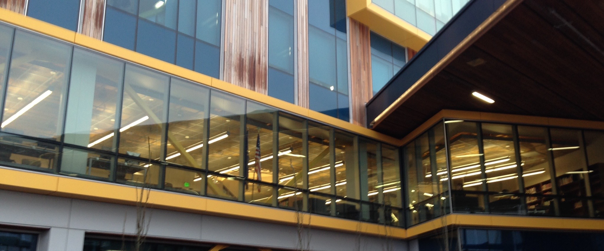

| Battle of
the Books |
Card
Catalog |
Computer
Checkout |
Research/Resources |
Bear
Tracks Newsletter |
Social
Media/ Contact |
| The library opened in January of 2015. It
houses over 10,000 books and AV items. Students use the
library for individual and group study. There are 8 tables
that students can work at or they can choose to sit in one
of 16 sofa chairs that overlook the ocean and
mountains. There are windows that look out over the
cascading commons and a wall of windows that open up into
the hall way to create a more open atmosphere. The library
is a very inviting and fun place for students to hangout and
work together. On average 12 to 15 students are in the
library every class period. |
|  Kodiak High School
Library
|
| Kodiak High School 722 Mill Bay Road Kodiak, AK 99615 907-486-0196 |